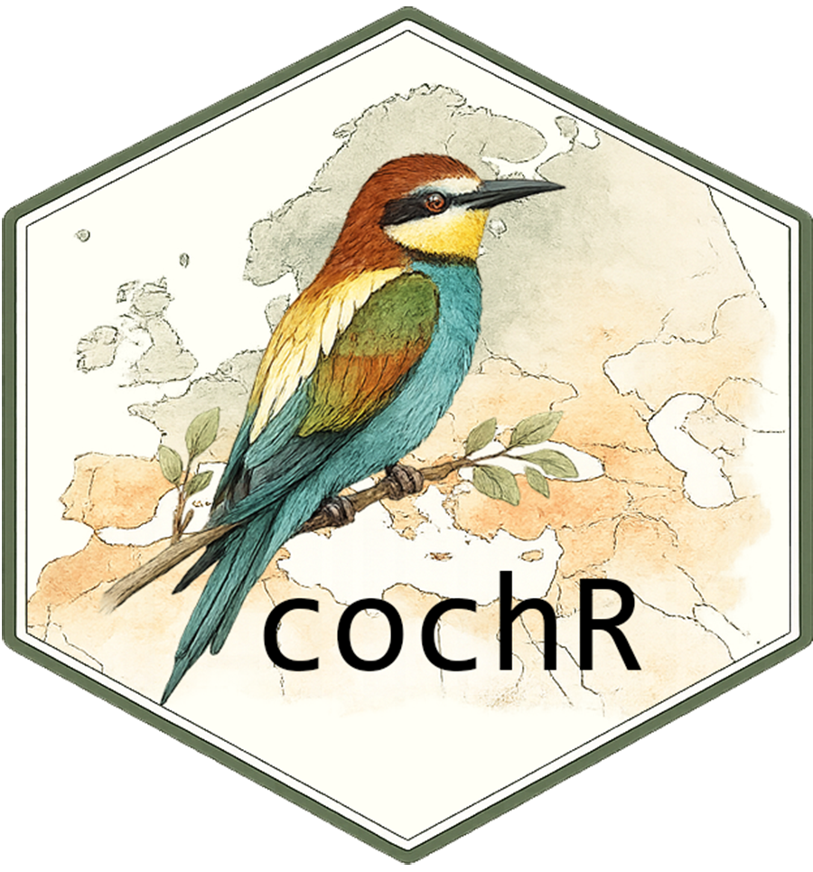

Get an interactive map from your personnal data from eBird.
Installation
You can install the development version of cochr from GitHub with:
# install.packages("pak")
pak::pak("vieuxtypes/cochr")Download your eBird data
Before using bird_map(), you need to download your observations from eBird:
- Go to eBird
- Click on Download My Data.
- Click on Request My Observations.
- Wait for the email from eBird.
- Download the attached
MyEBirdData.csvfile. - Use this file with
bird_map().